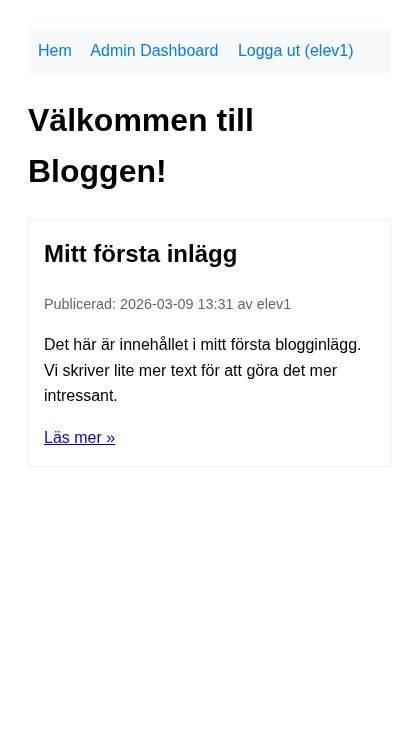

Del 4: Skapa och läsa inlägg
I denna del implementerar vi Create och Read – motsvarar Del 3: Skapa och läsa inlägg i CRUD-appen. Vi bygger steg för steg: först routes och grundstruktur, sedan skapa inlägg utan bild, därefter lista och visa, admin-panel och till sist bilduppladdning.
Förutsättning: Du har genomfört Del 3: Setup och autentisering.
Steg 1: Routes och grundläggande PostController
Börja med att definiera alla routes och en controller som returnerar enkel output. Vi bygger vyer stegvis.
Skapa controllern:
php artisan make:controller PostController
Exempel på utdata:
INFO Controller [app/Http/Controllers/PostController.php] created successfully.
Lägg till i routes/web.php (under de routes Breeze skapat, men före Breeze:s route för / om den finns). Om Breeze har satt / som dashboard behöver vi ändra det – se avsnittet "Uppdatera startsidan" längst ned.
use App\Http\Controllers\PostController;
Route::get('/', [PostController::class, 'index'])->name('posts.index');
Route::get('/posts/{post}', [PostController::class, 'show'])->name('posts.show');
Route::middleware('auth')->group(function () {
Route::get('/admin', [PostController::class, 'admin'])->name('posts.admin');
Route::get('/admin/posts/create', [PostController::class, 'create'])->name('posts.create');
Route::post('/admin/posts', [PostController::class, 'store'])->name('posts.store');
Route::get('/admin/posts/{post}/edit', [PostController::class, 'edit'])->name('posts.edit');
Route::put('/admin/posts/{post}', [PostController::class, 'update'])->name('posts.update');
Route::delete('/admin/posts/{post}', [PostController::class, 'destroy'])->name('posts.destroy');
});
Nyckelkoncept:
Route::middleware('auth')– Skyddar admin-routes. Motsvararif (!isset($_SESSION['user_id']))i varje admin-fil. Om användaren inte är inloggad omdirigeras de till login.{post}i URL:en – Route model binding. Laravel hämtar automatiskt Post-modellen baserat på ID. Du behöver intefilter_inputellerget_post_by_id().
Implementera temporära metoder i PostController som bara returnerar text (vi bygger vyer i nästa steg):
<?php
namespace App\Http\Controllers;
use App\Models\Post;
use Illuminate\Http\Request;
class PostController extends Controller
{
public function index()
{
$posts = Post::with('user')->latest()->get();
return view('posts.index', compact('posts'));
}
public function show(Post $post)
{
return view('posts.show', compact('post'));
}
public function admin()
{
$posts = auth()->user()->posts()->latest()->get();
return view('posts.admin', compact('posts'));
}
public function create()
{
return view('posts.create');
}
public function store(Request $request)
{
// Kommer i Steg 2
return redirect()->route('posts.admin');
}
}
Skapa mappen resources/views/posts/ och två minimala vyer.
index.blade.php (för startsidan):
@extends('layouts.app')
@section('content')
<h1>Välkommen till Bloggen!</h1>
@forelse($posts as $post)
<p>{{ $post->title }}</p>
@empty
<p>Det finns inga blogginlägg ännu.</p>
@endforelse
@endsection
admin.blade.php (för admin-panelen – vi bygger ut den i Steg 3):
@extends('layouts.app')
@section('content')
<h1>Admin Dashboard</h1>
<p>Välkommen, {{ auth()->user()->name }}!</p>
<a href="{{ route('posts.create') }}">Skapa nytt inlägg</a>
@foreach($posts as $post)
<p>{{ $post->title }}</p>
@endforeach
@endsection
OBS: Create-vyn bygger vi i Steg 2. Om du klickar "Skapa nytt inlägg" innan dess får du fel – det är normalt, gå vidare till Steg 2.
Kontrollera att det fungerar: Gå till /. Om du har testinlägget från Del 3 (Tinker) ska du se det. Annars ska du se "Det finns inga blogginlägg ännu." Logga in och gå till /admin – du ska se admin-panelen med dina inlägg (eller tom lista). Om du får fel om att vyn saknas, kontrollera att layouts.app finns (Breeze skapar den).
Steg 2: Skapa inlägg – utan bild
Nu lägger vi till formuläret och store()-metoden. Vi börjar utan bilduppladdning så att grundlogiken fungerar.
Uppdatera store() i PostController:
public function store(Request $request)
{
$validated = $request->validate([
'title' => 'required|max:255',
'body' => 'required',
]);
auth()->user()->posts()->create([
'title' => $validated['title'],
'body' => $validated['body'],
'image_path' => null,
]);
return redirect()->route('posts.admin')->with('success', 'Nytt inlägg skapat!');
}
Nyckelkoncept: $request->validate() ersätter manuell $errors[]-logik. Laravel validerar och returnerar fel automatiskt till formuläret om valideringen misslyckas.
Skapa resources/views/posts/create.blade.php:
@extends('layouts.app')
@section('content')
<h1>Skapa nytt blogginlägg</h1>
<form action="{{ route('posts.store') }}" method="POST">
@csrf
<div>
<label for="title">Titel:</label>
<input type="text" id="title" name="title" value="{{ old('title') }}" required>
@error('title') <span class="text-red-600">{{ $message }}</span> @enderror
</div>
<div>
<label for="body">Innehåll:</label>
<textarea id="body" name="body" required>{{ old('body') }}</textarea>
@error('body') <span class="text-red-600">{{ $message }}</span> @enderror
</div>
<button type="submit">Spara inlägg</button>
</form>
@endsection
Blade-tips: @error('title') visar valideringsfel för fältet. old('title') återställer värdet om formuläret skickas tillbaka med fel – så användaren inte behöver skriva om allt.

Kontrollera att det fungerar: Logga in och gå till /admin/posts/create. Skapa ett inlägg med titel och innehåll. Du ska omdirigeras till admin-panelen och se ditt nya inlägg. Testa att skicka formuläret tomt – du ska se valideringsfel.
Steg 3: Admin-panel och lista
Skapa admin-vyn så att du kan se dina inlägg och nå "Skapa nytt inlägg":
Skapa resources/views/posts/admin.blade.php:
@extends('layouts.app')
@section('content')
<h1>Admin Dashboard</h1>
<p>Välkommen, {{ auth()->user()->name }}!</p>
@if(session('success'))
<p class="text-green-600">{{ session('success') }}</p>
@endif
<a href="{{ route('posts.create') }}">Skapa nytt inlägg</a>
<table>
<thead>
<tr><th>Titel</th><th>Skapad</th><th>Åtgärder</th></tr>
</thead>
<tbody>
@foreach($posts as $post)
<tr>
<td>{{ $post->title }}</td>
<td>{{ $post->created_at->format('Y-m-d H:i') }}</td>
<td>
<a href="{{ route('posts.show', $post) }}">Visa</a>
<a href="{{ route('posts.edit', $post) }}">Redigera</a>
<!-- Radera-knapp kommer i Del 5 -->
</td>
</tr>
@endforeach
</tbody>
</table>
@endsection
Kontrollera att det fungerar: Gå till /admin. Du ska se dina inlägg i en tabell. Klicka "Skapa nytt inlägg", skapa ett inlägg – du ska se det i listan och få meddelandet "Nytt inlägg skapat!". ("Redigera"-länken ger fel tills Del 5 – det är normalt.)
Steg 4: Förbättra index och show
Uppdatera resources/views/posts/index.blade.php så att listan visar mer information:
@extends('layouts.app')
@section('content')
<h1>Välkommen till Bloggen!</h1>
@forelse($posts as $post)
<article>
<h2>{{ $post->title }}</h2>
<p>Publicerad {{ $post->created_at->format('Y-m-d H:i') }} av {{ $post->user->name }}</p>
<p>{{ Str::limit($post->body, 200) }}</p>
<a href="{{ route('posts.show', $post) }}">Läs mer »</a>
</article>
@empty
<p>Det finns inga blogginlägg ännu.</p>
@endforelse
@endsection
Skapa resources/views/posts/show.blade.php:
@extends('layouts.app')
@section('content')
<article>
<h1>{{ $post->title }}</h1>
<p>Publicerad {{ $post->created_at->format('Y-m-d H:i') }} av {{ $post->user->name }}</p>
<div>{!! nl2br(e($post->body)) !!}</div>
</article>
<a href="{{ route('posts.index') }}">« Tillbaka</a>
@endsection
OBS: {!! nl2br(e($post->body)) !!} – vi använder e() för att escap:a (skydda mot XSS) och nl2br() för radbrytningar. {!! !!} skriver ut utan extra escaping eftersom vi redan escap:at med e().
Kontrollera att det fungerar: Gå till /. Klicka "Läs mer" på ett inlägg – du ska se hela inlägget. Klicka "Tillbaka" – du ska tillbaka till listan.


Steg 5: Bilduppladdning
Lägg till stöd för att ladda upp en bild när man skapar inlägg.
Uppdatera store() i PostController:
public function store(Request $request)
{
$validated = $request->validate([
'title' => 'required|max:255',
'body' => 'required',
'image' => 'nullable|image|max:7168', // 7 MB
]);
$path = null;
if ($request->hasFile('image')) {
$path = $request->file('image')->store('posts', 'public');
}
auth()->user()->posts()->create([
'title' => $validated['title'],
'body' => $validated['body'],
'image_path' => $path,
]);
return redirect()->route('posts.admin')->with('success', 'Nytt inlägg skapat!');
}
Uppdatera resources/views/posts/create.blade.php – lägg till enctype="multipart/form-data" i form-taggen och bildfältet:
<form action="{{ route('posts.store') }}" method="POST" enctype="multipart/form-data">
@csrf
<div>
<label for="title">Titel:</label>
<input type="text" id="title" name="title" value="{{ old('title') }}" required>
@error('title') <span class="text-red-600">{{ $message }}</span> @enderror
</div>
<div>
<label for="body">Innehåll:</label>
<textarea id="body" name="body" required>{{ old('body') }}</textarea>
@error('body') <span class="text-red-600">{{ $message }}</span> @enderror
</div>
<div>
<label for="image">Bild (valfritt, max 7 MB):</label>
<input type="file" id="image" name="image" accept="image/jpeg,image/png,image/gif">
@error('image') <span class="text-red-600">{{ $message }}</span> @enderror
</div>
<button type="submit">Spara inlägg</button>
</form>
Uppdatera index.blade.php och show.blade.php – lägg till bildvisning där det passar:
I index.blade.php, inuti @forelse-loopen, före <h2>:
@if($post->image_path)
<img src="{{ asset('storage/' . $post->image_path) }}" alt="" style="max-width: 150px;">
@endif
I show.blade.php, efter rubriken:
@if($post->image_path)
<img src="{{ asset('storage/' . $post->image_path) }}" alt="{{ $post->title }}" style="max-width: 100%;">
@endif
Steg 6: Symbolisk länk för uppladdningar
För att bilder ska vara tillgängliga via webbläsaren måste du skapa en symbolisk länk:
php artisan storage:link
Exempel på utdata:
INFO The [public/storage] link has been connected to [storage/app/public].
Detta skapar en länk från public/storage till storage/app/public. Uppladdade bilder hamnar i storage/app/public/posts/.
Kontrollera att det fungerar: Skapa ett nytt inlägg med en bild. Du ska se bilden på startsidan och på inläggets sida. Om bilden inte visas, se "Vanliga problem" nedan.
Uppdatera startsidan
Breeze sätter som standard / som dashboard för inloggade användare. Vi vill att / alltid visar postlistan (som i CRUD-appens index.php).
Så här fixar du det:
- Öppna
routes/web.php. - Ta bort eller kommentera bort Breeze:s route för
/om den finns (t.ex.Route::get('/', ...)som pekar på dashboard). - Se till att vår route
Route::get('/', [PostController::class, 'index'])kommer före eventuella andra routes som matchar/. - Om du vill ha en separat dashboard för inloggade användare kan du lägga
Route::get('/dashboard', ...)och peka admin-länken dit – eller använd/adminsom "dashboard" (som vi redan gör).
Breeze:s routes/auth.php inkluderas via Route::middleware('auth')->group(...) i web.php. Kontrollera att vår PostController-route för / är definierad och att ingen annan route överskuggar den.
Vanliga problem
| Problem | Lösning |
|---|---|
| Bilder visas inte | Kör php artisan storage:link. Kontrollera att filen finns i storage/app/public/posts/. |
404 på /posts/1 | Route model binding kräver att parametern heter {post} (singular) och att metoden tar Post $post. Kontrollera routes/web.php och show()-metoden. |
| Valideringsfel visas inte | Kontrollera att du har @error('fältnamn') i formuläret och att old('fältnamn') används för att återställa värdet. |
| 403 eller redirect till login på /admin | Du måste vara inloggad. Gå till /login och logga in först. |
| Class "Post" not found | Kontrollera att du har use App\Models\Post; högst upp i PostController. |
I denna del har du lärt dig
- Att definiera routes med middleware för att skydda admin-sidor
- Att använda route model binding (
{post}→Post $post) - Att validera formulär med
$request->validate() - Att använda Blade-direktiv som
@forelse,@errorochold()i formulär - Att ladda upp filer med
$request->file()->store()ochstorage:link
Föregående: Del 3: Setup och autentisering | Nästa: Del 5: Uppdatera och radera